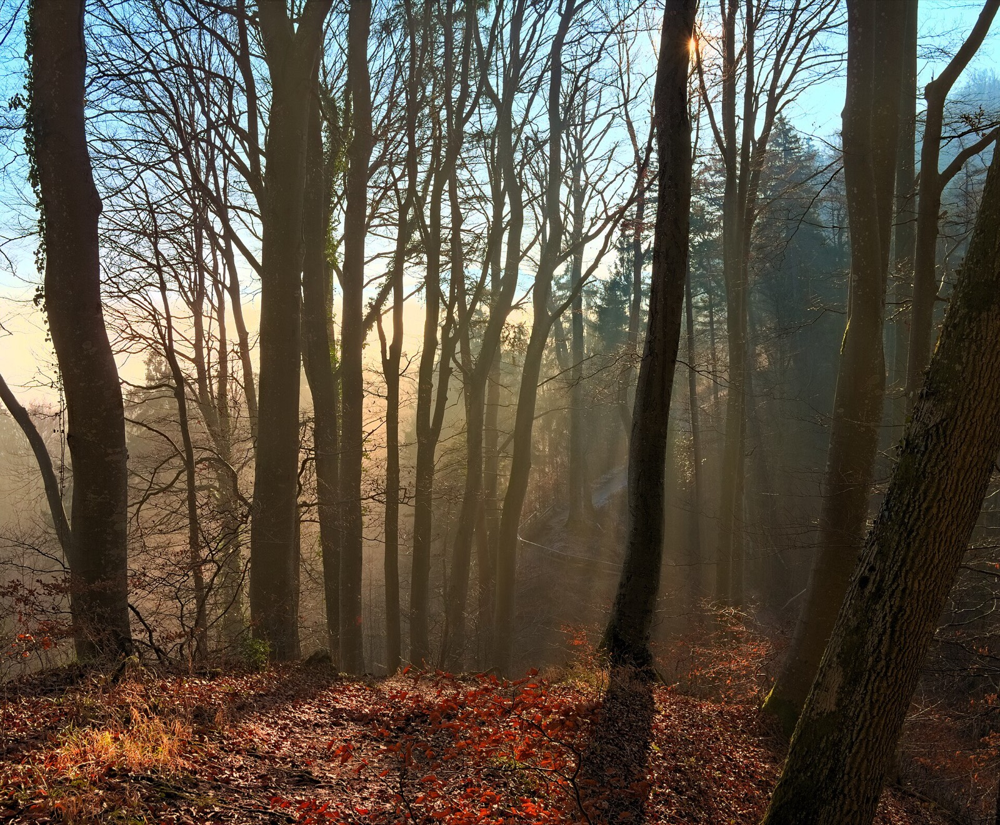
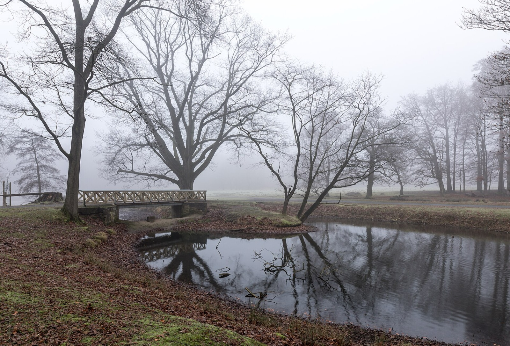
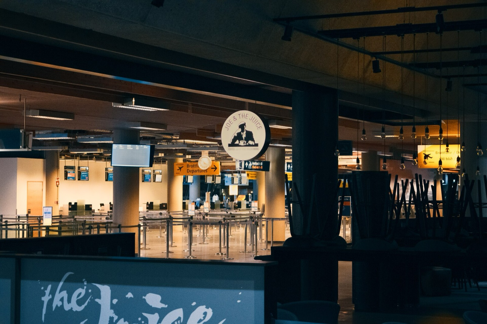
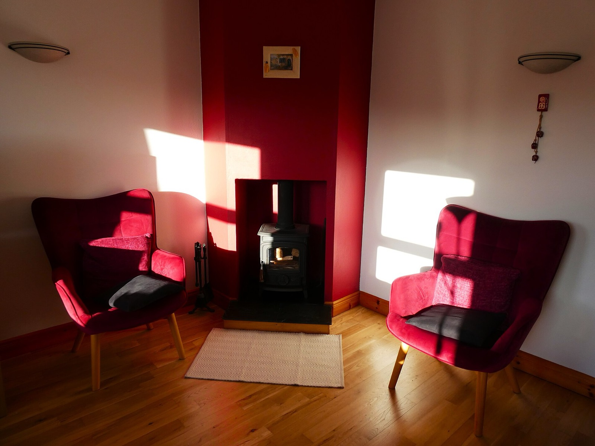
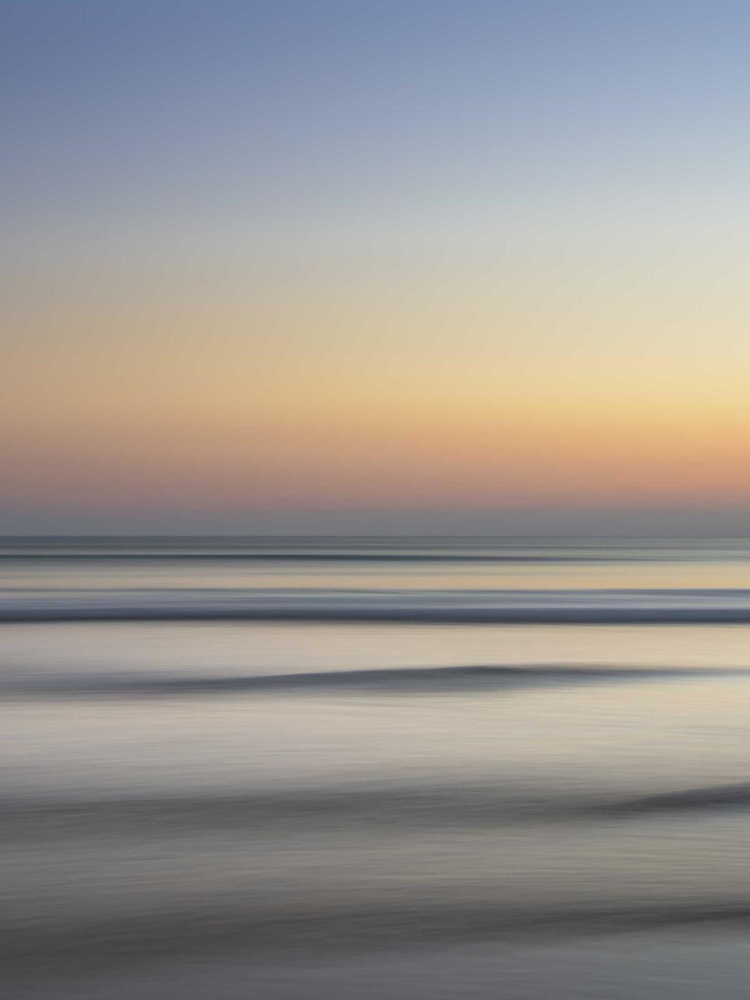
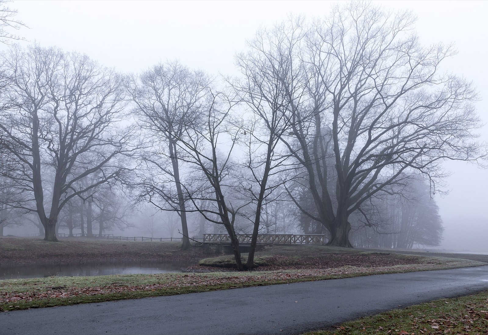

mynds begleitet junge Erwachsene durch die Wochen bis zum ersten Therapiegespräch.
Prototyp ansehen
Wartezeit: BPtK-Wartezeiterhebung, Angabe aus eigener Recherche.


Heute notiert: Stimmung 4, Energie 4, Anspannung 7 Deine Beobachtung. mynds rechnet daraus nichts aus.
Vier Schritte, die heute schon funktionieren: vom Willkommen bis zum persönlichen Profil. Alles auf deinem Gerät.
mynds
Einstieg in vier Schritten
Ist mynds eine Therapie? Nein. mynds behandelt nicht, diagnostiziert nicht und ersetzt weder Psychotherapie noch ärztliche Versorgung. Es ist eine Begleitung für die Zeit davor.
Was passiert mit meinen Angaben? Sie bleiben auf deinem Gerät. Kein Server, keine Cloud, kein Tracking. Freigaben erfolgen nur aktiv durch dich.
Bekomme ich einen Score oder eine Diagnose? Nein. Der Symptom-Check ist reine Selbstauskunft: keine Punkte, keine Ampeln, keine automatische Auswertung.
Was kann der Prototyp schon? Den kompletten Einstieg, vom Willkommen bis zum Profil. Sprachnotizen, der Bericht für Praxen und Verläufe über Zeit entstehen in Release 2 und 3.
Was kostet mynds? Den Prototyp kannst du kostenlos ansehen. Über Preise für spätere Versionen ist noch nicht entschieden.
Wer macht mynds? Ein Gründerteam im S2B-Programm der WHU, Otto Beisheim School of Management.
Wenn es dir gerade sehr schlecht geht: Telefonseelsorge 0800 111 0 111, kostenlos, 24/7 · Ärztlicher Bereitschaftsdienst 116 117 · Notruf 112

[ Kontaktdaten werden ergänzt ]